ที่อยู่อาศัยเป็นปัจจัย 4 และเป็นตัวชี้วัดคุณภาพชีวิต บทนี้เรียน 3 เรื่องใหญ่: (1) การออกแบบเพื่อสิ่งแวดล้อม (Eco Design, 4R) (2) วิทยาศาสตร์ของสภาพแวดล้อมบ้าน — ปัจจัยภายนอก/ภายใน ลม ความร้อน แสงสว่าง (3) วิทยาศาสตร์กับวัสดุก่อสร้าง — ปูนซีเมนต์และนวัตกรรม อิฐ ไม้/WPC เหล็ก และวัสดุสังเคราะห์ (กระเบื้องยาง สี พลาสติก ท่อ)
ในข้อสอบฝึก บทนี้ออก 16 ข้อ (ข้อ 55–70) เน้น: Eco Design, 4R, กระแสลม, การถ่ายเทความร้อน 3 แบบ, วัสดุกันความร้อน 3 ชนิด, ไฮเดรชั่น, อิฐ, ไม้ (เซลลูโลส+ลิกนิน), ข้อดีเหล็ก, ท่อ CPVC
1. ความสำคัญของที่อยู่อาศัย
- เป็นหนึ่งใน ปัจจัย 4 — สิ่งจำเป็นพื้นฐานต่อการดำรงชีวิต
- เป็น 1 ใน 9 ตัวชี้วัดคุณภาพชีวิต ที่ UN (1990) กำหนด สำหรับประเทศในภูมิภาค เอเชียและแปซิฟิก
2. วิทยาศาสตร์กับหลักการเลือกที่ตั้งที่อยู่อาศัย
สภาพแวดล้อมภายนอก เป็นตัวกำหนดที่ตั้งและลักษณะที่อยู่อาศัย ได้แก่ ลมฟ้าอากาศประจำเขต สภาพภูมิศาสตร์ ธรณีวิทยา ลักษณะอากาศ และสภาพข้างเคียง วิทยาศาสตร์และเทคโนโลยีเกี่ยวข้องทั้ง สภาพแวดล้อมภายนอก และ ภายในอาคาร — บทนี้เน้นผลกระทบของ ลมฟ้าอากาศ ความร้อน และแสงสว่าง
3. Eco Design ⭐
Eco Design = แนวทางออกแบบที่ ผนวกแนวคิดเศรษฐศาสตร์ (Economic) + นิเวศวิทยา (Ecological) เข้าในกระบวนการออกแบบ เป้าหมายหลัก: ลดผลกระทบต่อสิ่งแวดล้อมอย่างมีประสิทธิภาพสูงสุด โดยพิจารณา ตลอดวงจรชีวิตผลิตภัณฑ์ (Product Life Cycle): ทรัพยากร → วัสดุ/ชิ้นส่วน → การออกแบบ → การผลิต → การใช้งาน (Use/Repair) → หมดอายุ (End of life) → Reuse/Recycle
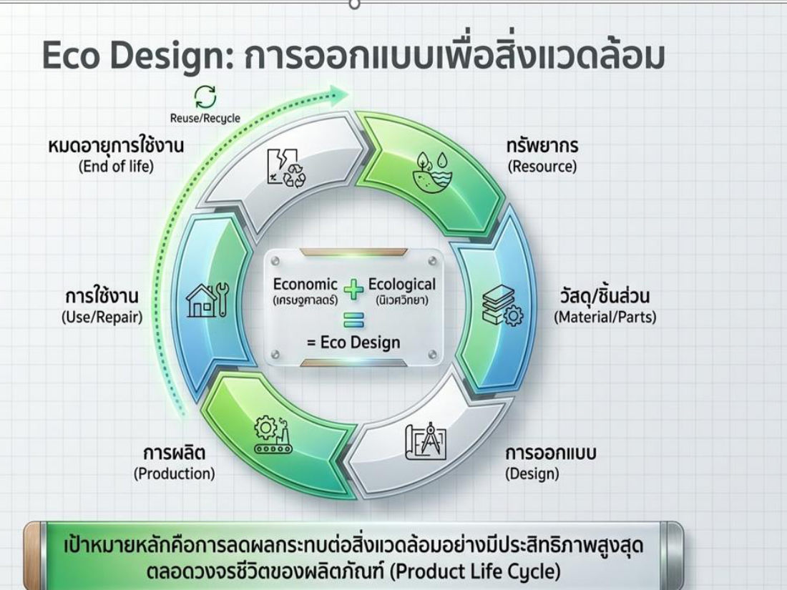
ปรัชญา Eco Design (6 ข้อ)
- ใช้ทรัพยากรอย่างพอเพียง
- ลดการใช้พลังงานที่ก่อให้เกิดมลภาวะ
- เหมาะสมกับภูมิอากาศ
- ใช้วัสดุที่เป็นพิษต่อสิ่งแวดล้อมแต่น้อย
- ยังประโยชน์แต่ประหยัด
- ส่งเสริมไลฟ์สไตล์ที่เป็นมิตรต่อสิ่งแวดล้อม
⚠️ "เน้นความหรูหรา ใช้พลังงานสูงสุด" = ไม่ใช่
Eco Living (บ้านรักษ์โลก): หลอดไฟ LED · แผงโซลาร์ผลิตไฟฟ้า · โครงสร้างที่ช่วยระบายอากาศ · ผลิตภัณฑ์ประหยัดน้ำ · เครื่องใช้ไฟฟ้าประหยัดพลังงาน · พื้นที่สีเขียว · วัสดุก่อสร้างที่ช่วยลดความร้อน ตัวอย่างสไลด์: Green & Sustainable Architecture (ตึกปลูกต้นไม้ตามระเบียง, หลังคาสวน)
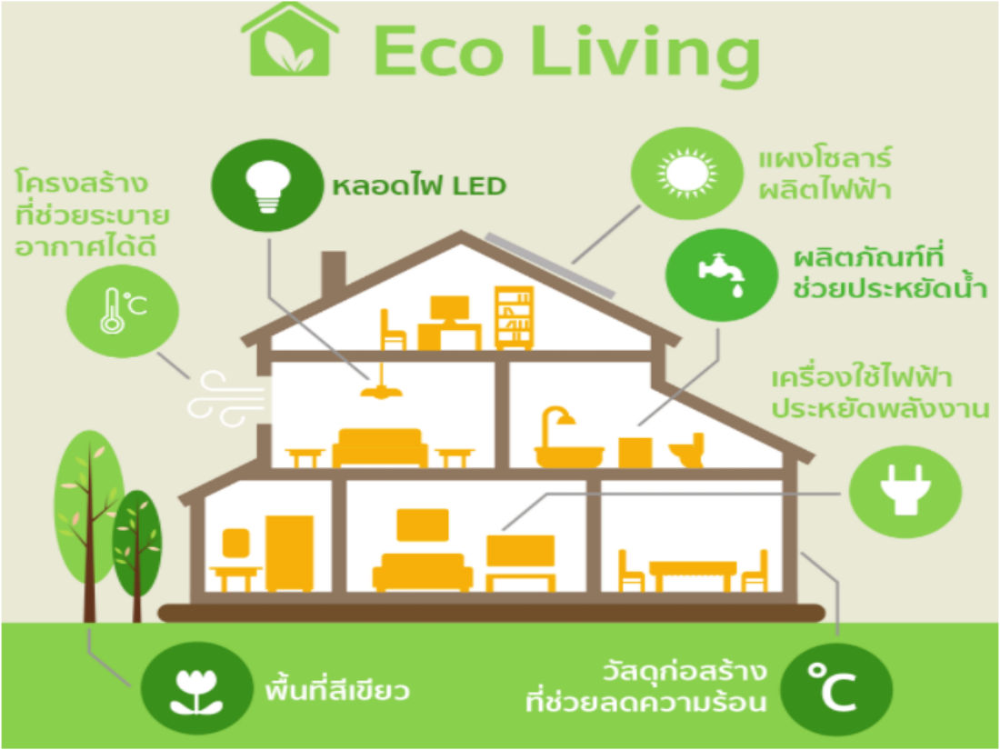
หลัก 4R: Reduce (ลดของเสีย) · Reuse (ใช้ซ้ำ) · Recycle (นำกลับมาใช้ใหม่) · Repair (ซ่อมบำรุง) ภาพประกอบ: Reduce CO₂ · Reduce Energy · Reduce Water · Reduce Waste
⚠️ 4R ไม่มี "Return" หรือ "Refuse"
4. ปัจจัยภายนอกต่อการออกแบบอาคาร (กระทรวงพลังงาน) — 4 ข้อ
| ปัจจัย | แนวทาง |
|---|---|
| 1. ทิศทางแสงแดด | ให้ ด้านแคบ ของอาคารหัน ทิศตะวันออก–ตะวันตก เพื่อให้ด้านที่มีพื้นที่ผนังน้อยรับความร้อน โดยเฉพาะช่วงบ่ายแดดจัด → ความร้อนเข้าอาคารลดลง ลดไฟฟ้าระบบปรับอากาศ |
| 2. พืชพันธุ์ธรรมชาติ | ปลูกต้นไม้ใหญ่ทรงแผ่กว้าง พุ่มใบโปร่งรอบอาคาร ให้ร่มเงา · ปลูกไม้พุ่ม · สร้างบ่อน้ำเพิ่มความเย็น · ปลูกหญ้า/พืชคลุมดินกันความร้อนให้พื้นดิน |
| 3. สภาพภูมิประเทศ | ปรับแต่งเนินดินรอบอาคารช่วยให้ลมเย็นพัดผ่านสะดวก · สร้างบ่อน้ำใหญ่ให้ลมพัดผ่านสร้างความเย็น |
| 4. สภาพภูมิอากาศ | คำนึงถึงภูมิอากาศท้องถิ่น ใช้ลมประจำถิ่น วางแนวอาคาร/เปิดช่องรับลม — ไทย: ลมฤดูร้อน จากทิศใต้/ตะวันตกเฉียงใต้ · ลมฤดูหนาว จากทิศเหนือ/ตะวันออกเฉียงเหนือ |
5. การใช้เทคโนโลยีแก้ปัญหาสภาพแวดล้อมที่อยู่อาศัย
ภาพรวม: 1. ลมฟ้าอากาศ (ระบายอากาศ · กระแสลม · ความกว้างช่องเปิด · ทิศทางลม) · 2. ความร้อน (การถ่ายเทความร้อน · หลักป้องกันความร้อนจากดวงอาทิตย์ · วัสดุกันความร้อน) · 3. แสงสว่าง (หน่วยวัดความส่องสว่าง · หลักการให้แสงสว่าง · การสะท้อนแสง · ชนิดหลอดไฟ)
5.1 ลมฟ้าอากาศ
- 1.1 การระบายอากาศ (Ventilation) = เปลี่ยนอากาศเก่าในห้องออกไป ให้อากาศใหม่ที่สดชื่นกว่าเข้ามาแทน (ไล่กลิ่น อากาศร้อน ฝุ่น ความชื้น VOCs เรดอน)
- 1.2 กระแสลม (Air movement) = เกิดจาก ความแตกต่างของความกดอากาศ หรือ ความแตกต่างของอุณหภูมิ — ลมพัดจาก ความกดอากาศสูง/อุณหภูมิต่ำ → ความกดอากาศต่ำ/อุณหภูมิสูง
- 1.3 ความกว้างของช่องเปิด — นอกจากตำแหน่งช่องเปิด/หน้าต่าง ความกว้าง ก็มีผลต่อการกระจายของลมที่พัดผ่านห้อง (ช่องแคบ = ลมพุ่งเป็นลำแคบ · ช่องกว้าง = ลมกระจายทั่วห้อง)
- 1.4 ทิศทางลม — บังคับลมให้ผ่านอาคารตามต้องการได้ยาก แต่ ชนิดและตำแหน่งหน้าต่าง ช่วยบังคับได้ รวมถึง ชายคา (Awnings) และ แผงกั้นลม (Barriers) เปลี่ยนทิศลม
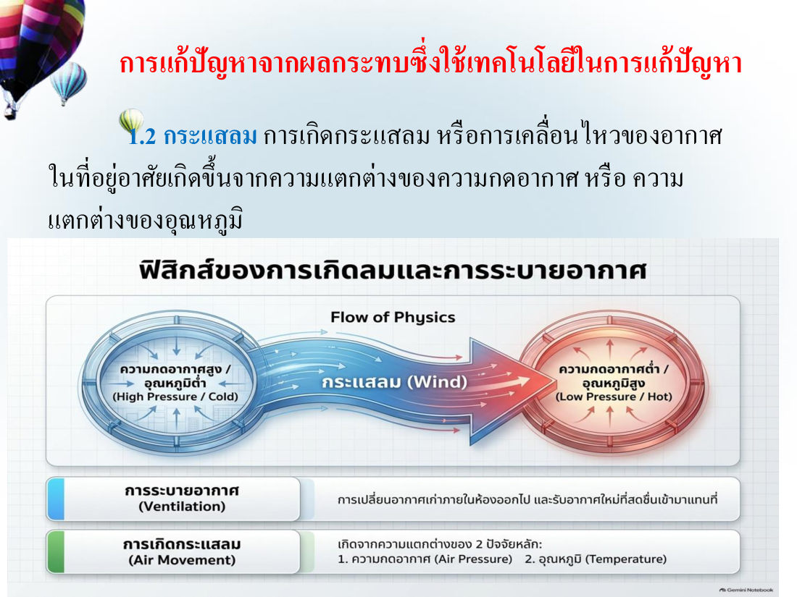
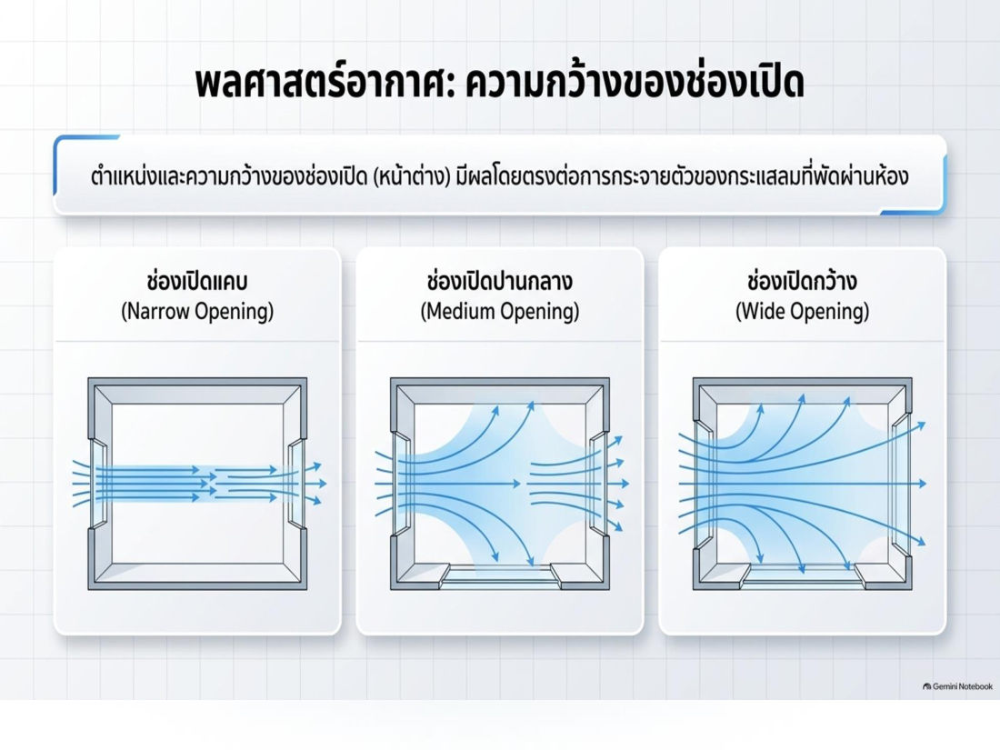
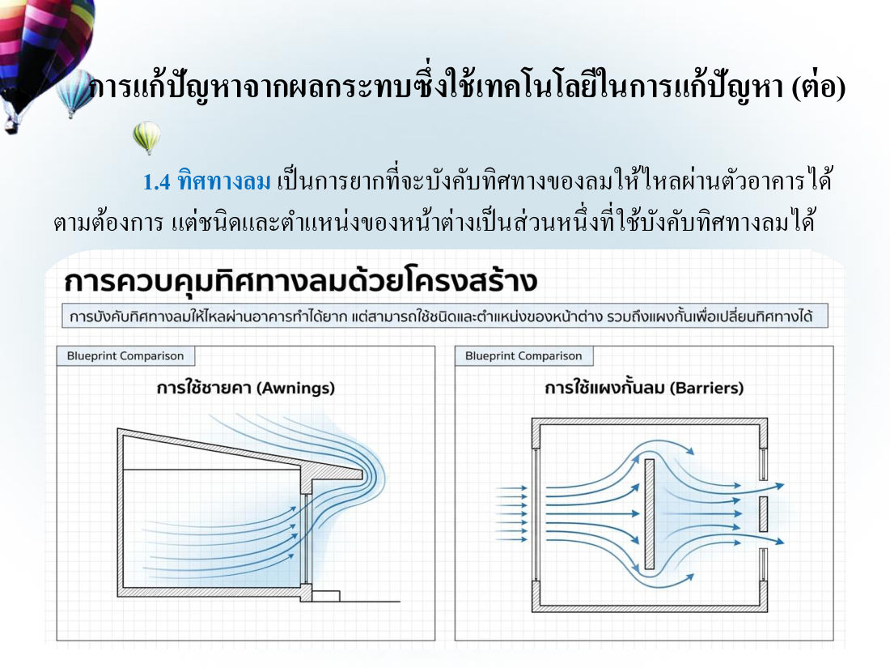
💡 (เสริม — ข้อสอบฝึกข้อ 58) อาคารในที่ร้อนชื้นระบายความร้อนดีที่สุดเมื่อมี ช่องเปิดเพียงพอ วางให้ลมพัดผ่านตลอด (cross ventilation) ร่วมกับวัสดุนำความร้อนต่ำ — ไม่ใช่อาคารปิดทึบ
5.2 ความร้อน — การถ่ายเทความร้อน 3 แบบ ⭐
| แบบ | เกิดอย่างไร | ปัจจัยที่มีผล / ตัวอย่าง |
|---|---|---|
| การนำความร้อน (Conduction) | ความร้อนไหลผ่านจากวัตถุหนึ่งไปอีกวัตถุที่ สัมผัสกัน | สมบัติการนำความร้อนของสสาร ความหนาแน่น ความชื้นในสสาร ความต่างของระดับความร้อน · เช่น ด้ามหม้อร้อน, ความร้อนผ่านหลังคา/พื้น |
| การพาความร้อน (Convection) | เกิดใน ของเหลวหรือก๊าซ ที่ความหนาแน่นต่างกันเมื่อร้อนต่างกัน → เกิด การเคลื่อนไหว แล้วพาความร้อนไป | Natural convection (ลอยขึ้นเอง) / Forced convection (ใช้พัดลม) · เช่น น้ำเดือดหมุนวนในหม้อ |
| การแผ่รังสีความร้อน (Radiation) | ความร้อนแผ่ออกจากวัตถุ เดินทางผ่านอากาศ ในลักษณะคลื่น (ไม่ต้องสัมผัส) | ความถี่คลื่นขึ้นกับอุณหภูมิวัตถุ · สสารทุกชนิดแผ่รังสีได้ มากน้อยขึ้นกับ อุณหภูมิ และ ธรรมชาติของผิววัตถุ · เช่น แดดส่อง, ไอร้อนจากกองไฟ |
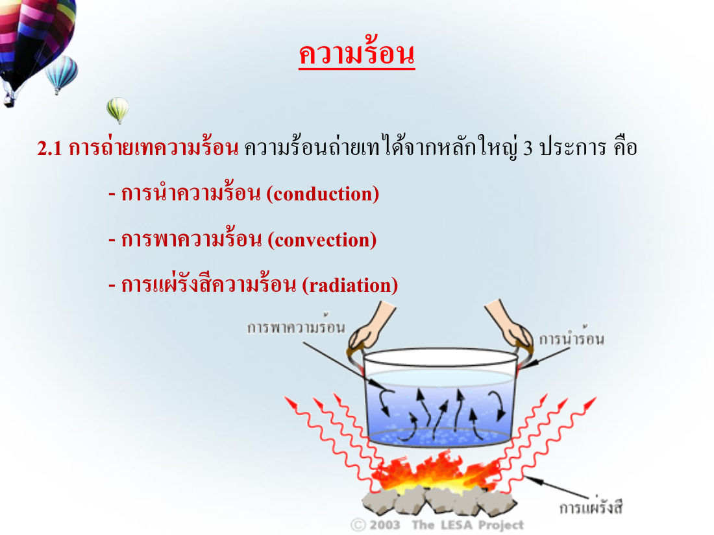
💡 จำ: นำ = แตะ · พา = ไหล (ของเหลว/ก๊าซ) · แผ่ = คลื่น ไม่ต้องมีตัวกลาง
แหล่งความร้อนที่เกิดขึ้นในอาคาร: การนำความร้อนจากหลังคา · การแผ่รังสีจากดวงอาทิตย์ · อุปกรณ์ในอาคาร · อากาศภายนอก · ผนังอาคาร · การนำความร้อนจากพื้น · ความร้อนจากผู้ใช้อาคาร
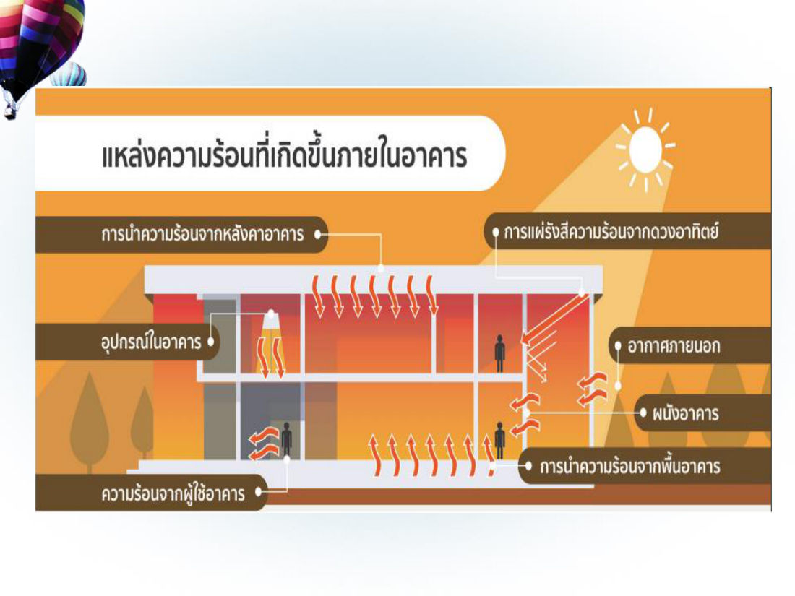
5.3 วัสดุกันความร้อน (insulation) ⭐
วัสดุที่ นำความร้อนต่ำ ความหนาแน่นน้อย เป็นฉนวนและตัวดักความร้อนก่อนเข้าอาคาร ให้ความร้อนผ่านโดยการนำได้ช้าลง แบ่ง 3 ประเภท:
- ชนิดแผ่นแท่งก้อน (rigid insulation)
- ชนิดแผ่นยืดหยุ่นได้ (flexible / blanket types)
- ชนิดใช้ฉาบเสริม (insulating fills)
6. ปัจจัยภายในต่อการออกแบบอาคาร — 6 ข้อ
| ปัจจัย | แนวทาง |
|---|---|
| 1. ผนังทึบ | สำคัญต่อการประหยัดพลังงาน (พลังงานส่วนใหญ่ใช้กับแอร์) · เพิ่ม R-value (ความต้านทานความร้อน) ด้วยฉนวนที่ผนังด้านนอก หรือ ผนัง 2 ชั้นมีช่องว่างอากาศ · สีผนังภายนอกควร โทนอ่อน (ขาว ครีม) ดูดกลืนรังสีน้อยกว่าโทนเข้ม ถ้าใช้สีเข้มควรทาด้านที่โดนแดดน้อย หรือติดฉนวนเพิ่ม |
| 2. ผนังโปร่งแสง (กระจก) | รับและถ่ายเทความร้อนจากแดดเข้าอาคาร มากกว่าผนังทึบ 5–10 เท่า → เลือกชนิดกระจกและวิธีติดตั้งให้ดี |
| 3. หลังคา | ติดฉนวนกันความร้อน เช่น ฉนวนใยแก้ว, ฉนวน PU, แผ่นยิปซัมบอร์ด, แผ่นอลูมิเนียมฟอยล์ |
| 4. อุปกรณ์บังแดดภายนอก | ลดความร้อนได้ ดีกว่าแบบภายใน · ติดตั้งโดยคำนึงถึงทิศอาคาร ขนาดช่องเปิด ช่องว่างกับผนัง · ทิศใต้/เหนือ → แนวนอน · ทิศตะวันออก/ตะวันตก → แนวตั้ง |
| 5. ระบบปรับอากาศ | เลือกขนาดทำความเย็นเหมาะกับภาระ ประสิทธิภาพสูง เช่น ฉลากประหยัดไฟเบอร์ 5 |
| 6. ระบบไฟฟ้าแสงสว่าง | ใช้ไฟน้อยที่สุดแต่สว่างพอ · หลอดประสิทธิภาพสูง/LED · ใช้แสงธรรมชาติกลางวัน แยกสวิตช์โซนริมหน้าต่าง |
คุณสมบัติของกระจกที่เหมาะสม
| ค่า | ความหมาย | ควรเป็น |
|---|---|---|
| VT (Visible Transmittance) | ค่าการส่องผ่านของแสง | ไม่น้อยกว่า 20% เพื่อใช้แสงธรรมชาติ |
| U-value | สัมประสิทธิ์การถ่ายเทความร้อนรวม | น้อย (เช่น กระจกเขียวตัดแสง, สะท้อนแสง, Low-E) |
| SHGC (Solar Heat Gain Coefficient) | สัมประสิทธิ์การส่งผ่านความร้อนจากรังสีอาทิตย์ผ่านกระจก | น้อย กันรังสีอาทิตย์และสบายตา |
ตัวเลขในสไลด์: กระจกใส U 1.25 / VT 0.74 / SHGC 0.76 · กระจกเขียวตัดแสง U 0.49 / VT 0.44 / SHGC 0.46 · Low-E U 0.32 / VT 0.50 / SHGC 0.30 (ดีสุด)
หลอดไฟ (650 lumen เท่ากัน): หลอดไส้ 60W อายุ 1,000 ชม. · หลอด CFL 13W 8,000 ชม. ประหยัด 78% · หลอด LED 8W 15,000 ชม. ประหยัด 86%
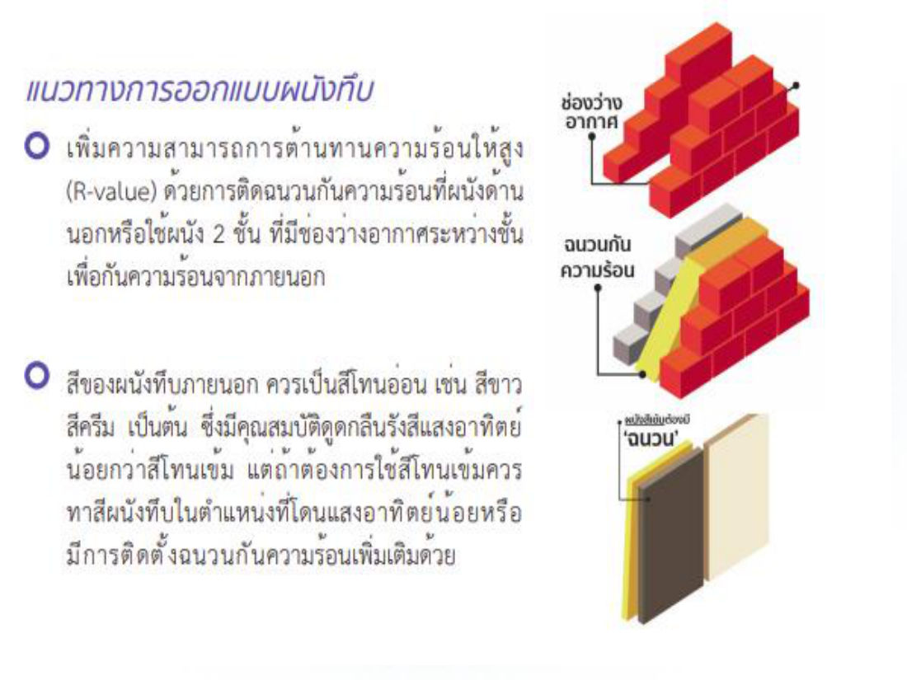
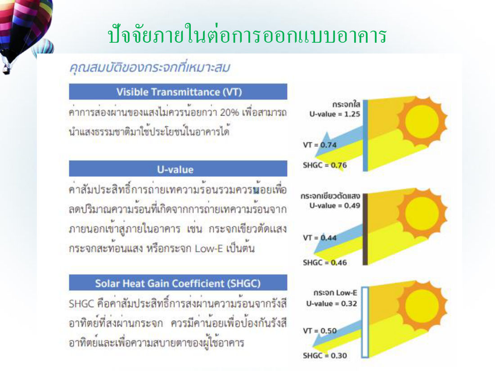
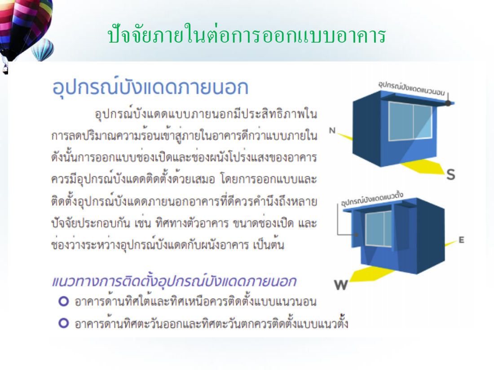
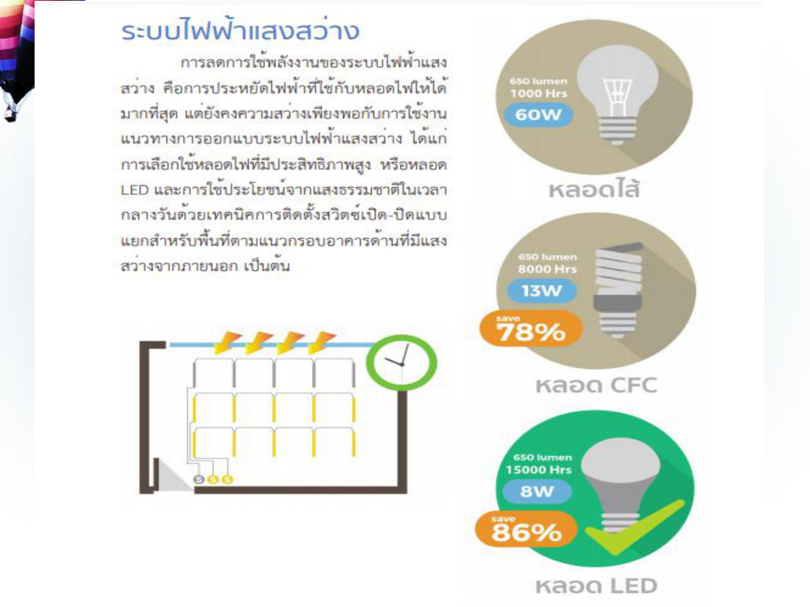
(เสริม — ข้อสอบฝึกข้อ 64–65 ไม่มีในสไลด์) ประเทศไทยอยู่ซีกโลกเหนือ แผงโซลาร์ควรหัน ทิศใต้ · บ้านระบายอากาศไม่ดีเสี่ยง โรคทางเดินหายใจและภูมิแพ้
7. วิทยาศาสตร์กับวัสดุก่อสร้าง
วิทยาศาสตร์เกี่ยวข้อง 2 ประเด็น: (1) ปรับปรุง/เปลี่ยนแปลงสมบัติทรัพยากรธรรมชาติ ให้เป็นวัสดุก่อสร้างที่ดีขึ้น (2) สังเคราะห์สารทดแทน ทรัพยากรธรรมชาติ
7.1 ปูนซีเมนต์
- ผสมน้ำ → เปลี่ยนแปลงทางเคมี = ปฏิกิริยาไฮเดรชั่น (hydration) → ยึดอนุภาคของแข็งให้รวมกัน
- ปูน + หินกรวด + ทราย + น้ำ ในอัตราส่วนเหมาะสม = คอนกรีต แข็งตัวแล้วทนทานคล้ายหิน
- ปัญหาโลกแตก: ด้านบวก — ปูนให้ความแข็งแรง ปลอดภัย บ้านมั่นคง · ด้านลบ — การเผาแบบเดิมปล่อย CO₂ มหาศาล สิ้นเปลืองพลังงาน · ทางออก: ลดผลกระทบตลอดวงจรชีวิตผลิตภัณฑ์ (Eco Design)
นวัตกรรมปูนซีเมนต์ 5 อย่าง ("The Green Blueprint")
| นวัตกรรม | สาระสำคัญ |
|---|---|
| 1. ปรับสูตรปูน (Recipe) | ปูนแบบดั้งเดิม (Portland) ใช้หินปูนมาก เผาร้อนจัด ปล่อยคาร์บอนสูง → ปูนรักษ์โลก (Geopolymer & Low-CO₂) ใช้วัสดุทดแทน เช่น เถ้าลอย (Fly Ash), ตะกรัน (Slag) ไม่ต้องเผาร้อนสูง ลด CO₂ ได้สูงสุด 80% (ปูนไฮบริด/คาร์บอนต่ำ ลด CO₂ 0.05 ตัน/ปูน 1 ตัน) |
| 2. วงจรชีวิตระบบปิด (Circular Economy) | จาก "ผู้สร้างขยะ" เป็น "ผู้กำจัดขยะ" ผ่าน 4R · เชื้อเพลิงทางเลือก (ชีวมวล ขยะอุตสาหกรรม แทนฟอสซิล) · วัสดุเสริม (SCMs) นำของเสียอุตสาหกรรมผสมคอนกรีต |
| 3. พิมพ์ 3 มิติ (3D Printing Concrete) | ไร้ขีดจำกัดรูปทรง ไม่ต้องใช้แบบ · รวดเร็ว แม่นยำ (คอมพิวเตอร์คุม ลดแรงงาน) · ขยะเป็นศูนย์ |
| 4. คอนกรีตมีสมองและยืดหยุ่น (Smart & Flexible) | โค้งงอได้เล็กน้อย ต้านแผ่นดินไหว ลดแตกร้าว · ฝังเซนเซอร์ IoT วัดอุณหภูมิ/ความชื้น real-time + AI ปรับสูตรบ่มปูน |
| 5. ดูดซับคาร์บอน (Absorb) | CCS (Carbon Capture and Storage) ดักจับ CO₂ จากเตาเผา · Carbon-Negative Cement ดูดซับ CO₂ จากอากาศเก็บไว้ในโครงสร้างขณะแข็งตัว (ตึกเป็น "ต้นไม้สังเคราะห์") |
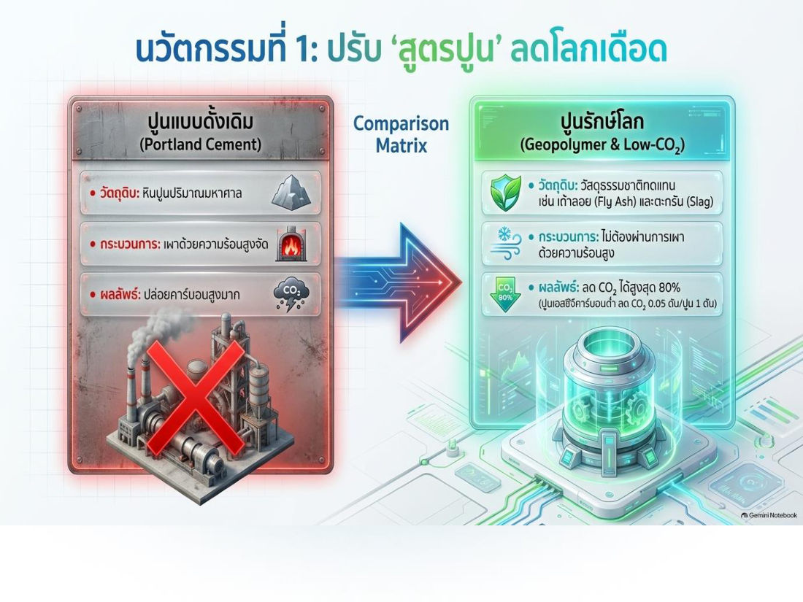
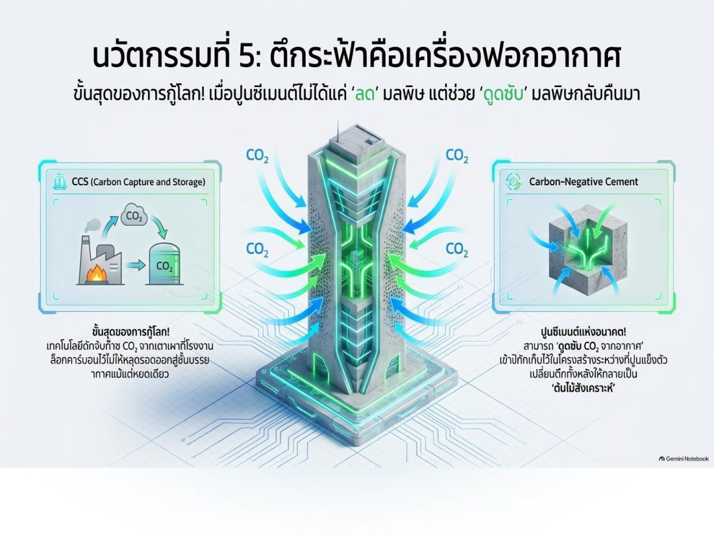
7.2 อิฐ (brick)
- ทำจาก ทราย + ดินเหนียว หรือ ทราย + หินแข็ง · สมบัติขึ้นกับสัดส่วน/ชนิดวัสดุ วิธีผลิต เวลาและอุณหภูมิเผา
- เผาอุณหภูมิสูงขึ้น → สีคล้ำขึ้น ความพรุนลดลง ความแข็งแรงเพิ่มขึ้น ⭐
- ชนิด: อิฐมอญ/อิฐดินเผา · อิฐขาว · อิฐประดับ · อิฐบล็อกและคอนกรีตบล็อก · อิฐทนไฟ
7.3 ไม้และไม้อัด / WPC
- ไม้ = อินทรีย์วัตถุธรรมชาติ สารสำคัญ 2 ชนิด: เซลลูโลส (ผนังเสี้ยนไม้ ~ 60%) และ ลิกนิน ⭐
- โครงสร้างไม้อายุใช้งานประมาณ 20–30 ปี ถ้าใช้เหมาะสมจะยืนยาว วิทยาศาสตร์ช่วยปรับสมบัติไม้ได้
- ปัญหาไม้จริง: สวยคลาสสิก แต่แลกกับปลวก ความชื้น ค่าบำรุงรักษา
- WPC (Wood Plastic Composite / ไม้เทียม) = ผงไม้ธรรมชาติ + พลาสติกโพลิเมอร์ + ความร้อน/การอัดรีด → ผสานจุดแข็ง (สวยแบบไม้ + ทนแบบพลาสติก) · ไร้รอยต่อ แข็งแรง · รักษ์โลก (พลาสติกรีไซเคิล ลดตัดไม้)
| Pain point | ไม้ธรรมชาติ | ไม้เทียม WPC |
|---|---|---|
| น้ำ/ความชื้น | บวม โก่ง ผุพังง่าย | ทนชื้น ไม่บวมน้ำ 100% |
| ปลวก/แมลง | อาหารชั้นดีของปลวก | ปลอดภัย 100% (Anti-Termite) |
| ไฟ | เชื้อเพลิงชั้นดี ลามเร็ว | Fire Retardant (ชะลอการลามไฟ) |
| บำรุงรักษา | ขัด/ทาสีตลอดอายุ | ลงทุนครั้งเดียว ไม่ต้องทาสีใหม่ |
วิวัฒนาการไม้เทียม: Gen 1 WPC + PE (หนัก แข็งแรง แต่ดูดความชื้น เสื่อมตามอากาศ) → Gen 2 WPC + PVC (เบามาก เหมาะผนัง/ฝ้า แต่ทน UV ไม่ดี กรอบแตกเมื่ออยู่กลางแจ้ง) → Gen 3/4 Co-Extrusion (เคลือบโพลิเมอร์ HDPE/ASA เป็น "เกราะ" รอบแกนกลาง ทนแดด ทนฝน สีไม่ซีด อายุ 10–50 ปี) Co-Extrusion: เกราะป้องกันผิว (Durashield — เคลือบ 360° กัน UV สีไม่ซีด กันน้ำ 100% ทนเคมี กันรอยขีดข่วน) + แกนกลาง (PE เน้นรับน้ำหนัก / PVC เน้นเบา / Aluminium อายุ 50 ปี)
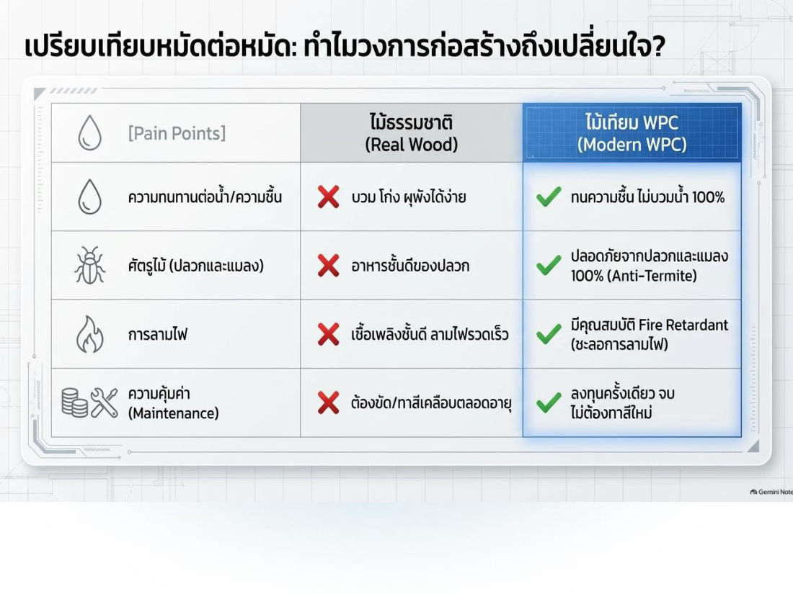
7.4 เหล็ก
| ข้อดี | ข้อเสีย |
|---|---|
| กำลังสูง คุณสมบัติสม่ำเสมอ ยืดหยุ่นสูง คงทนถาวร มีความอ่อนตัว ใช้เวลาก่อสร้างน้อย | ราคาแพง ค่าบำรุงรักษาสูง กำลังตกเมื่อโดนความร้อนสูง โก่งงอได้ง่าย |
การป้องกันสนิม 3 วิธี
- เคลือบผิว — พ่นโฟมกันสนิม ทาสี/พ่นสีกันสนิม
- ทำเหล็กกล้าไร้สนิม — เกิดฟิล์มบางบนผิว เช่น นิกเกิล (Ni), โครเมียม (Cr)
- ใช้กระแสไฟฟ้า — ทำให้เหล็กมีศักย์ไฟฟ้าสูงกว่าบริเวณรอบ ๆ
8. วิทยาศาสตร์เพื่อสังเคราะห์สารทดแทนทรัพยากรธรรมชาติ
เหตุผล: ประชากรเพิ่ม ทรัพยากรลดลง และทรัพยากรเกิดใหม่ใช้เวลานาน → สังเคราะห์สารใหม่ทดแทน
- 8.1 กระเบื้องยาง — โค้งดัดได้โดยไม่แตก เพราะยืดหยุ่นดี ใช้ในที่ที่มีไขมันได้ (ทนคราบสกปรก)
- 8.2 สี — ทาเพื่อ รักษาเนื้อไม้/วัสดุให้คงทนถาวร (และความงาม) สีทาอาคารสังเคราะห์เป็นฟิล์มเคมีป้องกันรังสี UV สภาพอากาศ การผุพัง
- 8.3 พลาสติก — ได้จากกระบวนการทางวิทยาศาสตร์ คงทนถาวร ป้องกันแมลงและสัตว์ ได้
ท่อพลาสติก 5 ชนิด ⭐
| ท่อ | ชื่อเต็ม | ใช้กับ |
|---|---|---|
| ABS | Acrylonitrile-Butadiene-Styrene | ท่อระบายน้ำเสีย ท่ออากาศ |
| PVC | Polyvinyl Chloride | ต้านแรงดัน แรงกระแทก รับแรงดึงสูง → ท่อน้ำจ่ายเข้าอาคาร ระบายน้ำ ชลประทาน ส่งแก๊สธรรมชาติ |
| CPVC | Chlorinated Polyvinyl Chloride | ต้านความร้อนและแรงดันได้มากกว่าปกติ → ท่อน้ำร้อน ท่อสารเคมี |
| SR | Styrene-Rubber | ท่อในถังบ่อเกรอะ ระบายน้ำเสีย/น้ำฝน ท่อโสโครก ใต้ดิน |
| PO | Polyolefin | ท่อน้ำเสีย เพราะ ต้านการสึกกร่อนดี |
💡 CPVC = PVC ที่เติม Chlorine จนทนร้อนกว่า → น้ำร้อน · SR = ใต้ดิน · PVC = น้ำประปาเข้าบ้าน
คำศัพท์สำคัญ
| คำศัพท์ | ความหมาย | จำง่าย ๆ ว่า |
|---|---|---|
| Eco Design | Economic + Ecological ลดผลกระทบตลอดวงจรชีวิต | เศรษฐ + นิเวศ |
| Product Life Cycle | วงจรชีวิตผลิตภัณฑ์ ตั้งแต่ทรัพยากรถึงหมดอายุ | เกิด–ตาย ของสินค้า |
| 4R | Reduce Reuse Recycle Repair | ไม่มี Return |
| Ventilation | เปลี่ยนอากาศเก่าออก อากาศใหม่เข้า | |
| Conduction / Convection / Radiation | นำ / พา / แผ่รังสี | แตะ / ไหล / คลื่น |
| Insulation | วัสดุกันความร้อน นำความร้อนต่ำ | rigid / blanket / fills |
| R-value / U-value | ความต้านทานความร้อน (สูงดี) / การถ่ายเทความร้อน (ต่ำดี) | R ต้าน, U ผ่าน |
| SHGC / VT | ความร้อนจากแดดผ่านกระจก / แสงผ่านกระจก | SHGC น้อยดี, VT ≥ 20% |
| Hydration | ปฏิกิริยาปูน + น้ำ | ปูนแข็งตัว |
| Geopolymer | ปูนคาร์บอนต่ำ ใช้เถ้าลอย/ตะกรัน | ลด CO₂ 80% |
| WPC | Wood Plastic Composite ไม้เทียม | ผงไม้ + พลาสติก |
| CPVC | ท่อทนร้อน | น้ำร้อน |
สรุปท้ายบท / จุดที่มักออกสอบ
- ที่อยู่อาศัย = ปัจจัย 4 + 1 ใน 9 ตัวชี้วัดคุณภาพชีวิต UN 1990
- Eco Design = เศรษฐศาสตร์ + นิเวศวิทยา ตลอด Product Life Cycle · ปรัชญา 6 ข้อ · 4R = Reduce Reuse Recycle Repair
- ปัจจัยภายนอก 4: ทิศแสงแดด (ด้านแคบหัน ต.อ.–ต.ต.) · พืชพันธุ์ · ภูมิประเทศ · ภูมิอากาศ
- ปัจจัยภายใน 6: ผนังทึบ · ผนังโปร่งแสง (ร้อนกว่า 5–10 เท่า) · หลังคา · บังแดดภายนอก (ใต้/เหนือ=แนวนอน, ออก/ตก=แนวตั้ง) · แอร์เบอร์ 5 · แสงสว่าง/LED
- กระแสลม = ความต่างความกดอากาศหรืออุณหภูมิ
- นำ = สัมผัส · พา = ของเหลว/ก๊าซ ความหนาแน่นต่าง · แผ่รังสี = คลื่น ไม่ต้องสัมผัส
- ฉนวน 3 ชนิด: แผ่นแท่งก้อน / แผ่นยืดหยุ่น / ฉาบเสริม
- ปูน + น้ำ = ไฮเดรชั่น · อิฐเผาร้อนขึ้น = คล้ำ พรุนลด แข็งแรงขึ้น · ไม้ = เซลลูโลส + ลิกนิน
- เหล็ก ข้อดี = กำลังสูง ยืดหยุ่นสูง สร้างเร็ว · ข้อเสีย = แพง บำรุงรักษาสูง กำลังตกเมื่อร้อน
- CPVC = ท่อน้ำร้อน · PVC = น้ำประปา · ABS = น้ำเสีย/อากาศ · SR = ใต้ดิน · PO = น้ำเสีย กันกร่อน